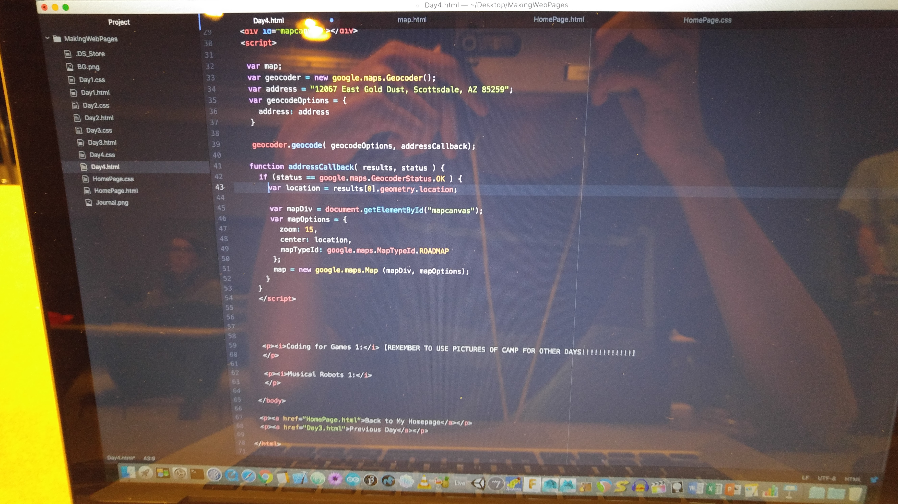

Making Web Pages: I started to create multi-pages for my blog site. I learned how to connect the pages with links. We also learned about computer's use of binary language, only with two numbers: 0 and 1! Gunner the Dog was crying also, because he lost his bone. He was so cute. I also added margins, color, and changed the font of my new site. However, I forgot to save my progress in this class, but eventually recovered in other classes.
Coding For Games 1: I started to make player controls with the UFO. Using the up, down, left and right arrow keys, the UFO can move in any direction. We also played with variables like speed, to adjust our game 'difficulty.' Immediately after, we began to make collisions with the background and the UFO, so the spaceship wouldn't fly off the entire screen. :/ We also fixed some camera issues, creating a movement so it would track the UFO's moves.
Musical Robots 1: We began the class with the creation of our frets to place on the top of our wooden 'guitar.' Using hammers, pliers, and mallets, it took up most of our second day. We even ran out of frets because everyone was using them at the same time! After that, I began creating the top of the guitar with custom sound holes on the edges. What a day. :)